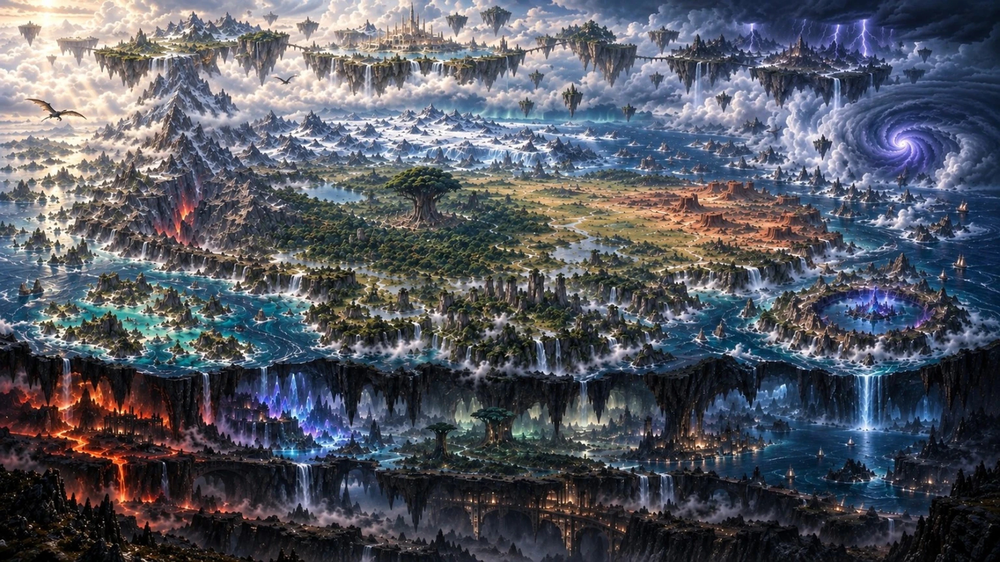
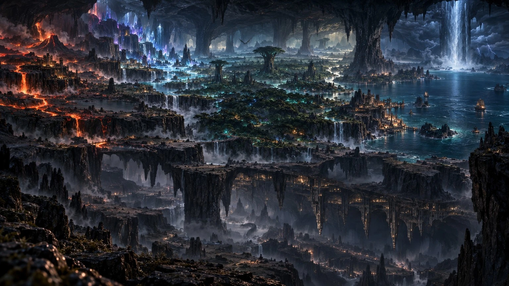

Clique sur « Commencer »Les sous-roues seront ajoutées automatiquement selon les résultats.
✓ Hazard Game Tournament : génération, lignées, tournoi simulé combat par combat et Hall of Fame.
📋 Registre complet de la saison
Clique sur une fiche pour la charger dans l’onglet Roue.
0 personnage
Aucun personnage sauvegardé.
🌳 Descendants & lignées
Registre des naissances, branches familiales, PNJ parents et héritiers des saisons futures.
Aucun descendant enregistré.
🌳 Arbre généalogique
Lecture de gauche à droite : générations anciennes → descendants.
🕯️ Naissances en attente
🩸 Descendants
🧑 PNJ liés aux lignées
⚔️ Tournoi des 64
Tableau à élimination directe. Chaque combat est simulé individuellement et son vainqueur est déterminé automatiquement.
S1
Le tournoi sera disponible dès que la saison contient 64 personnages. • FIX D
🏆 Hall of Fame
Les champions remportés, saison après saison. À partir de cinq champions, compose ton équipe de 5 pour les futurs affrontements entre joueurs.
0 champion
🌌 Univers
Intégration isolée du générateur.
🌍 VAELORIA

Glisser pour explorer · molette ou pincement pour zoomer
VAELORIA — Les Trois Strates
Un même monde composé d’Elyrion, Yndara et Nharak. Les strates sont physiquement reliées par des montagnes, gouffres, routes anciennes, portails et moyens de transport adaptés. La strate de naissance ne détermine pas le lieu de vie d’un personnage.
☁️ ELYRION
Strate céleste formée de gigantesques îles flottantes et d’archipels secondaires.
Sélectionner une région · glisser et zoomer pour explorer
Touchez le nom d’une région pour afficher sa fiche descriptive.
Écologie — Les grandes îles d’Aetherys portent des prairies froides d’altitude, des bois clairs et des lacs suspendus alimentés par les condensations des courants célestes. Les falaises exposées abritent surtout une faune volante, tandis que les plateaux intérieurs offrent des sols plus stables et fertiles.
Histoire — Aetherys compte parmi les plus anciens foyers habités d’Elyrion. Les présences divines et les premières civilisations angéliques y ont durablement marqué l’architecture et les traditions savantes, avant que les échanges avec les autres strates n’en fassent aussi une région cosmopolite.
Écologie — Archipel battu par des vents permanents, Thoryndra alterne falaises nues, landes rases et vallées protégées où la végétation résiste au sel et aux brusques variations de pression. Les espèces volantes et planeuses exploitent les puissants courants ascendants entre les îles.
Histoire — L’isolement des îles a favorisé des communautés de navigateurs célestes capables de lire les vents et de franchir les tempêtes. Les routes aériennes modernes reprennent en grande partie ces anciens passages, donnant à Thoryndra une forte tradition maritime, aérienne et martiale.
Écologie — Liorael est la partie la plus humide et végétale d’Elyrion. Des forêts tempérées, prairies fleuries et zones humides occupent les plateaux, tandis que les eaux s’échappent en cascades vers les nuages. L’abondance d’eau permet des chaînes alimentaires étonnamment riches pour des terres suspendues.
Histoire — Longtemps moins urbanisée que les hautes terres d’Aetherys, Liorael s’est développée autour de petites communautés rurales et contemplatives. Son eau, ses plantes et ses terres cultivables ont ensuite pris une importance majeure dans les échanges internes d’Elyrion.
Écologie — Les terres basses de Caelorn connaissent des conditions plus proches de la haute montagne de Yndara : brumes épaisses, forêts rabougries, parois rocheuses et corridors empruntés par les espèces capables de circuler entre altitudes.
Histoire — Sa position en bordure inférieure d’Elyrion en a fait une terre de passage. Des voyageurs, marchands et communautés frontalières s’y sont installés autour des voies permettant de rejoindre les hauteurs extrêmes de Kharadryn, créant une culture plus mêlée que dans le cœur céleste.
🌍 YNDARA
Strate de surface : un immense continent central entouré de grandes terres et d’archipels.
Sélectionner une région · glisser et zoomer pour explorer
Touchez le nom d’une région pour afficher sa fiche descriptive.
Écologie — Sylvaeryn forme un immense continuum forestier ancien, structuré par de grands cours d’eau, des clairières naturelles et quelques arbres titanesques très espacés. Vaelyr domine cet ensemble sans être un arbre-monde. La canopée, les sous-bois humides et les berges entretiennent une biodiversité exceptionnelle, des grands herbivores aux prédateurs forestiers et à une multitude d’espèces discrètes.
Histoire — La forêt est l’un des plus anciens foyers de peuplement de Yndara et le berceau historique de nombreuses communautés elfiques et féeriques. Les implantations humaines y sont restées dispersées afin de préserver les grands massifs, tandis que les anciennes voies fluviales et les clairières ont servi de liens entre populations sédentaires et itinérantes.
Écologie — Kharadryn est un vaste système de montagnes, hauts plateaux, vallées froides et réseaux cavernicoles. L’altitude crée une succession rapide d’étages écologiques, des forêts montagnardes aux pelouses alpines puis aux zones minérales. La Grande Faille ajoute des microclimats profonds et des échanges biologiques ponctuels avec Nharak.
Histoire — Les Nains y ont développé très tôt forteresses, mines et routes profondes, tandis que des populations de Géants occupaient plusieurs hautes vallées. La Grande Faille a ouvert des voies vers Kythera et Varkhoryn. À l’extrême altitude, une chaîne naturelle permet également une ascension physique, exceptionnellement difficile, jusqu’aux terres basses d’Elyrion.
Écologie — Les plaines d’Avelorn sont dominées par les graminées, les vallées fluviales fertiles et des mosaïques de bosquets. Les grands herbivores y migrent sur de longues distances et entretiennent les paysages ouverts, tandis que les cours d’eau concentrent oiseaux, prédateurs et cultures agricoles.
Histoire — Berceau historique de nombreuses populations humaines, Avelorn a vu croître des villages agricoles puis de grandes cités reliées par les fleuves et les routes commerciales. Sa position centrale et ses ressources alimentaires ont favorisé une forte urbanisation et l’arrivée de peuples venus de nombreuses régions de Vaeloria.
Écologie — Drakhenor associe steppes sèches, plateaux rocheux, mesas et canyons. Les pluies irrégulières favorisent des végétaux résistants à la sécheresse et de vastes troupeaux mobiles, suivis par leurs prédateurs. Les vallées et points d’eau constituent des refuges essentiels pendant les périodes arides.
Histoire — Les Orcs y ont développé des cultures adaptées aux longues distances : clans des steppes, communautés nomades et cités fortifiées sur les plateaux. Les routes entre points d’eau ont longtemps structuré alliances, échanges et conflits avant de devenir les grands axes terrestres de la région.
Écologie — Chaleur et humidité façonnent une mosaïque de jungles, marais, rivières lentes et grands reliefs rocheux isolés. Les crues saisonnières déplacent régulièrement les limites entre terre et eau. Cette diversité d’habitats explique une faune particulièrement riche, notamment de nombreuses lignées d’Hommes-bêtes, ainsi qu’une forte diversité d’amphibiens, reptiles, oiseaux et invertébrés.
Histoire — Les difficultés de déplacement ont longtemps maintenu Maelora en ensembles locaux plutôt qu’en territoire fortement centralisé. Gobelins, Hommes-bêtes et autres populations y ont développé des établissements adaptés aux marais, aux hauteurs rocheuses ou aux lisières de jungle, tandis que les frontières accessibles sont devenues des zones d’échange avec le reste de Yndara.
Écologie — Au nord de Yndara, Iskarya passe de la taïga à la toundra puis aux glaciers et fjords. La productivité explose pendant la courte saison douce, attirant oiseaux migrateurs et grands herbivores, tandis que les espèces résidentes présentent d’importantes adaptations au froid. Les côtes restent parmi les secteurs les plus riches grâce aux ressources marines.
Histoire — Les populations se sont concentrées sur les littoraux, les vallées protégées et les routes saisonnières de la glace. Des communautés boréales sédentaires coexistent avec des groupes nomades suivant les ressources, et les ports ont progressivement relié Iskarya aux autres régions malgré son climat contraignant.
Écologie — L’impact de Neoxus a profondément modifié cette terre périphérique. Autour du lac de cratère, des structures et réseaux techno-organiques coexistent avec des milieux naturels transformés : sols enrichis ou stérilisés localement, végétation aux formes inhabituelles et faune ayant colonisé ces nouveaux habitats sans que l’ensemble de la région soit artificiel.
Histoire — Les sociétés N.E.X.U.S. se sont développées autour des vestiges et technologies associés à Neoxus. Une culture traditionnelle subsiste loin des grands centres, tandis que les technopoles et les frontières techno-organiques ont fait de Nexara un territoire à part dans les échanges et les savoirs de Vaeloria.
Écologie — Kaelora est un réseau d’îles tropicales, récifs, lagons, mangroves et pentes volcaniques. Les récifs concentrent une forte biodiversité marine et protègent de nombreuses nurseries, tandis que les îles accueillent oiseaux marins, reptiles et espèces adaptées à l’isolement.
Histoire — Les habitants ont très tôt dépendu de la navigation entre les îles. Ports, pêche et commerce ont produit une culture maritime ouverte, fréquentée par marchands, explorateurs et pirates. Les routes de Kaelora relient aujourd’hui plusieurs façades de Yndara et des terres périphériques.
Écologie — Vaerunn se situe dans une zone océanique dominée par vents violents, orages et fortes houles. Les falaises, îlots et eaux profondes accueillent surtout des organismes capables de résister ou d’exploiter cette agitation. Une fracture marine entraîne continuellement une partie des eaux vers Nharak et contribue au système hydrologique de Naeroth.
Histoire — Les communautés de Vaerunn ont bâti des ports fortifiés et développé une navigation spécialisée dans les tempêtes. L’étude des courants ascendants a ensuite permis aux vaisseaux des vents de gagner Elyrion, faisant de l’archipel l’un des rares liens réguliers entre navigation océanique et navigation céleste.
🔥 NHARAK
Immense strate souterraine variée : ni enfer, ni royaume des morts.

Sélectionner une région · glisser et zoomer pour explorer
Touchez le nom d’une région pour afficher sa fiche descriptive.
Écologie — Varkhoryn occupe d’immenses cavernes volcaniques où chaleur géothermique, lacs sombres, fumerolles et coulées de lave créent des habitats en mosaïque. La vie se concentre autour des eaux, des gradients thermiques et de ressources chimiques profondes ; la faune évite les zones les plus instables et utilise les vastes réseaux de cavernes tempérées.
Histoire — Les ressources minérales et la chaleur ont favorisé l’apparition de puissantes traditions de forge et de communautés cavernicoles. Les routes remontant la Grande Faille vers Kharadryn ont entretenu des échanges anciens avec Yndara, malgré des périodes d’isolement provoquées par l’activité volcanique.
Écologie — Les cavernes de Kythera sont traversées de rivières et de lacs clairs au milieu de formations cristallines gigantesques. Leur lumière diffuse, combinée aux organismes bioluminescents, entretient localement des communautés biologiques complexes. Les cristaux modifient aussi les abris, les sols et les déplacements de nombreuses espèces.
Histoire — L’abondance de cristaux et minerais rares a attiré mineurs, artisans et savants. Des cités se sont établies près des grands gisements tout en développant des méthodes destinées à stabiliser les cavernes. La branche bleue-violette de la Grande Faille relie historiquement Kythera aux profondeurs de Kharadryn.
Écologie — Lumerys abrite un véritable système forestier souterrain alimenté par rivières, lacs et cascades. Champignons, végétaux et organismes bioluminescents produisent une lumière diffuse qui rythme une partie de l’activité animale. L’humidité constante et les nombreux étages de végétation permettent une biodiversité étonnamment élevée pour Nharak.
Histoire — Les premiers établissements durables se sont organisés autour de l’eau et des clairières lumineuses plutôt qu’autour de l’extraction minière. Cette relation étroite avec l’écosystème a nourri des traditions forestières et spirituelles, et Lumerys est longtemps restée moins densément urbanisée que Kythera ou Varkhoryn.
Écologie — Naeroth est une mer souterraine gigantesque, alimentée notamment par des eaux venues de la surface via la fracture marine de Vaerunn. Falaises, plages cavernicoles, eaux peu profondes et abysses forment des habitats très différents. De grands organismes marins peuvent parcourir les zones profondes, tandis que les côtes concentrent la majorité de la vie terrestre.
Histoire — Des ports cavernicoles se sont développés sur les falaises et les rives accessibles, faisant de la navigation le principal moyen de liaison. L’arrivée permanente d’eau depuis Vaerunn a donné naissance à des traditions décrivant surface et profondeurs comme les deux extrémités d’un même système marin.
Écologie — Mor’Khal se trouve sous les autres grandes régions de Nharak. Plateaux cavernicoles, gorges, nappes de brume et réseaux hydrologiques convergents y forment un milieu froid, sombre et pauvre en production primaire. La vie est plus clairsemée, avec des organismes spécialisés capables de parcourir de grandes distances entre ressources rares.
Histoire — Les ruines monumentales, voies anciennes et cités construites jusque dans les plafonds témoignent d’occupations très anciennes dont une partie de l’histoire s’est perdue. Sa profondeur et la difficulté des accès ont empêché une cartographie complète ; Mor’Khal reste ainsi un carrefour inférieur de fractures et de passages anciens plutôt qu’un royaume intrinsèquement hostile.
🧬 Races
Races principales
Les cultures, royaumes et lieux de résidence ne sont pas imposés par la race.
Descendance exceptionnelle issue d’un Titan primordial et d’un Dragon supérieur.
Principe de Vaeloria : Race ≠ Culture ≠ Royaume. Une origine influence les probabilités et l’histoire d’un personnage sans lui imposer une société, une morale ou un lieu de résidence.